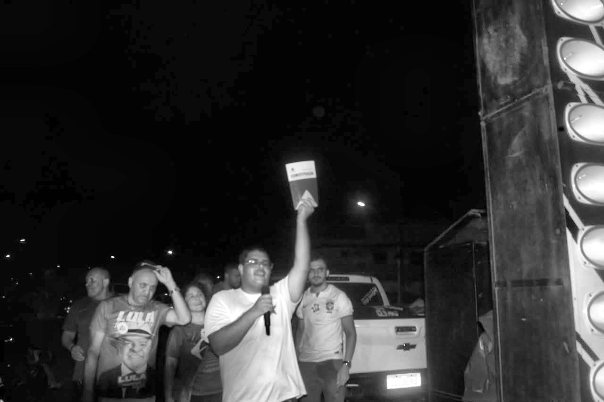
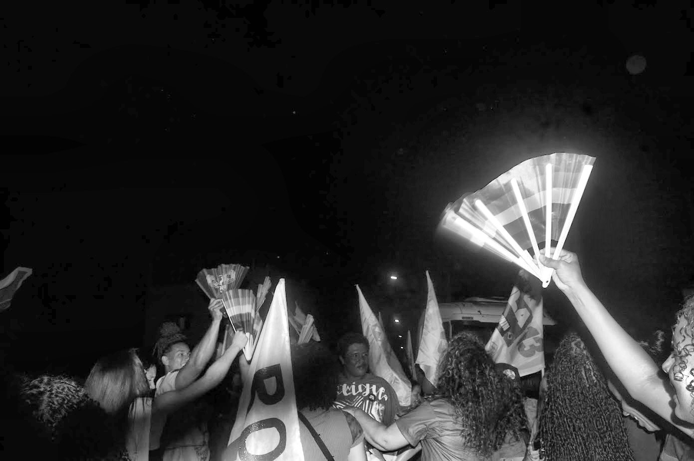
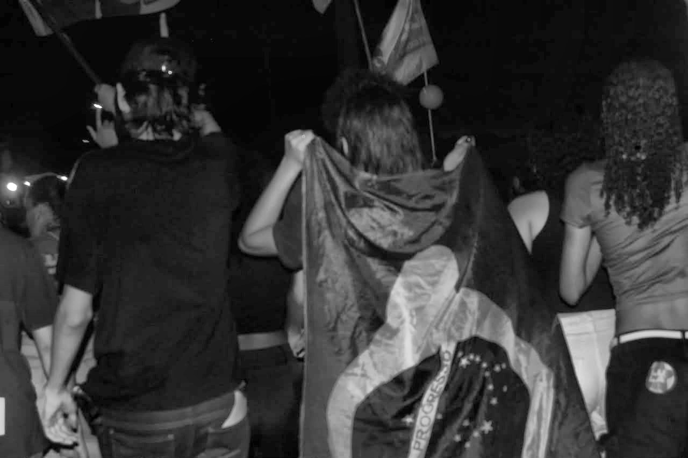

Divisa Alegre · Águas Vermelhas (MG)
A eleição acabou.
O impulso continua.
Movimento de juventude de esquerda de Divisa Alegre e Águas Vermelhas. Uniu estudantes e trabalhadores. Cresceu nas ruas.
Desde outubro de 2026
Divisa Alegre e Águas Vermelhas (MG)
54 verbetes na Escola
143 livros na Biblioteca



Fotos da Caminhada pela Democracia, o primeiro ato público do movimento.
Nossas bandeiras
O que a gente defende
Educação que não se vende
Escola pública forte, universidade e pesquisa financiadas, bolsa que sustenta quem é pobre. Contra voucher, militarização e corte na Capes, no CNPq e no Pé-de-Meia.
Ler a bandeira 02 · BandeiraTrabalho pra viver, não pra sobreviver
Fim da escala 6x1, primeiro emprego com carteira e direitos, contra a precarização disfarçada de “flexibilidade”.
Ler a bandeira 03 · BandeiraNossa vida vale mais que o ódio
Antirracismo, fim da misoginia e da LGBTfobia, contra a violência de Estado. Onde houver caso na região, o Impulso se manifesta, acompanha e cobra.
Ler a bandeiraEscola Impulso e Biblioteca
Formação pra entender
e não repetir frase feita
Duas ferramentas gratuitas: os verbetes da Escola, escritos por nós, e os livros da Biblioteca, em PDF, direto do Drive.
01 · Escola
Sete trilhas, 54 verbetes
Da palavra “mais-valia” ao AI-5, tudo explicado em três a cinco minutos de leitura, com datas, conceito-chave e fontes no fim.
02 · Ditadura militar
Ato por ato, de 1964 a 1985
Trilha nova: o que era um Ato Institucional, o que cada AI mudou e como o AI-5 fechou o Congresso. Sem decoreba, com documento.
03 · Biblioteca
143 livros, sem cadastro
Marx, Freire, Angela Davis, Florestan Fernandes e mais. Busca por título, autor ou tema — e o PDF abre no Drive, sem login.
A eleição passou.
O movimento ficou.
Se você é jovem de Divisa Alegre ou Águas Vermelhas e quer organizar o seu bairro, a sua escola ou a sua cidade, é aqui que começa. A gente responde em até 48 horas.